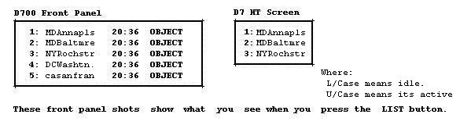

AVRS <=> IRLP/ILink
Bob Bruninga, WB4APR
THIS WAS THE AVRS CONCEPT in DEC 2001 when we CHANGED NAMES TO "IPRS".
The latest concept has returned to the name of AVRS and can be found at:
http://www.ew.usna.edu/~bruninga/avrs.html"
NEW: Look at this new proposed IRLP 5 Digit Numbering Plan.
This AVRS page is attempting to define how we can use the Human/Data Interface of the Kenwood D7 HT and D700 Mobile APRS rigs (Tiny-Web-Pages) to facilitate establishing end-to-end voice links and to push IRLP/ILink data to the front panel of the APRS radio. This concept was initially called AVRS for Automatic Voice Relay System and presented at the year 2000 DCC. (Click here to review paper). But now with the rapid growth or IRLP/ILink and others, the concept has the potential to evolve into a fantastic fully integrated AVRS system. Current growth rates of over 50 nodes per month will exceed 999 by Feb 2003 (See PLOT!). Or if you are new to IRLP, go see the Active-Node-List.
Use of the "AVRS" term for this evolving concept will help differentiate between what "is" and where we are "going"... AVRS is only a human interface overlay to IRLP or I-Link systems and does not obsolete existing users or control systems. See current details.

For additional closeups of the front panel showing the types of data that can be displayed on these "tiny-web-pages" go to my TINY-WEB-PAGE satellite tracking page that shows how they are used to dessiminate satellite tracking info LIVE to mobile users. Now imagine that these lists can also contain IRLP/ILink data, and the built-in end-to-end APRS data exchange can be used to automatically establish end-to-end voice links.
DEMONSTRATION: So you
can experiment with how this will look on everyon's D700, download this
Active Node File and
dump it through a TNC in converse mode over the air to your Kenwood D700!
Then you can see exactly how this is going to look on your radio front panel!

The only hardware needed to add this tremendous capability to any IRLP/ILink system is to add a TNC and some software to the PC and turn on CTCSS whenever the node is transmitting voice. This allows the same IRLP/ILink transmitter to also service its users with data between voice use. Thus, the mobile end user only needs one radio for both the voice and the data updates.
Note: We do need to assign 8-character geographic node names to all nodes to make this data fit the existing callsign fields in all APRS data applications. So I went ahead and edited up a list. (Download here) Also, for more details, see the new DRAFT AVRS PAPER HERE
Besides the signalling defined in the paper above, here are some other concepts that can be applied now in your area:
This javAPRS page below displays the current APRS-OVERLAY file of IRLP nodes provided by James Ewen. Ignore the red lines, they connect repeaters with identical frequencies(LABELS) and are an artifact of APRS vehicle tracking trying to "track moving objects"... But no reason why (with a little software) they couldnt show LIVE which repeaters are linked...
| zooms up/down (you may also use PGup/dn) | |
| List stations, Show Status or Messages to Java console | |
| Centers or Zooms map on clicked location | |
| scrolls map |
Click for World Map
Click here to download IRLP.POS
Here are some initial ideas that can be implemented by APRS users to begin recognizing AVRS nodes and concepts. These can be implemented now on APRS independent of progress on the AVRS side...
HOW TO PUT YOUR IRLP NODE ON THE APRS MAP:
Simply put your IRLP node as an object into one of the LText buffers of your local APRS digipeater and set its LTPath to direct and set its rate to 10 minutes. Bingo, every mobile in the area will see it on the front panel of his radio! Here are the formats of the TNC commands for use at the DIGI site:
In the above the LAT/LONG must be the exact number of digits, but you can replace the hundredths of minutes with TWO spaces which will give a position ambiguity of one mile if you want to protect the exact location of the repeater. The CCCCCC is the callsign of the repeater, #nnn is the IRLP node number, and then the frequency and tone of the repeater
AVRS SHARED VOICE/DATA CONCEPTS!
The minimum data necessary for the AVRS concept makes it possible to send both voice and DATA on the same channel so that all of AVRS can be done entirely on BAND A of the Kenwood D7 and D700 leaving the other band free for all other mobile ham radio applications. Also, with a combined voice/data channel/ single channel radios can be used by other experimenters to build compatible systems. Here is how to set up your Kenwood:
WOW. We can really do some neat things here!
Remember, we are not trying to re-invent APRS, and we are not trying to muckup existing IRLP oeprating procedures. We are simply exploring ways to overlay ideas to allow a marriage of mobile data exchange capabilities built into the Kenwoods, HAMHUDS. MIM's (and anything else someone wants to cobble up) to facilite long distance voice/data communications between end users via the internet...
de WB4APR@amsat.org, Bob
You are visitor:
since 4 Dec 2001.
.
{kind=link}